About CSS
HTML is Just an skleton layout of a website. We need CSS to design a website,add styles to it and make it look beautiful. CSS stands for Cascading Style Sheets CSS converts an off looking HTML page with a beautiful and responsive website.
Example

CSS Selectors
Selectors are used in CSS to target specific HTML elements and apply styles to them. CSS provides a wide range of selectors, including element selectors, class selectors, ID selectors, attribute selectors, and more. When an HTML element is given an id it serves as a unique id identifier for that element.On the other hand, When an HTML Element is given a class, It now belongs to that class.More than one element can belong to a single class but every element must have a unique id (if assigned).You can take a example more that one student can be in 7th class no student can have same Admission Number.We target Class with (.(dot)) and id with(#)
Example:-
Background Property
In CSS (Cascading Style Sheets), the background property is used to define the background styling of an element, such as a div or a body. It allows you to set various background-related properties, such as the background color, image, position, and more.
The Background Color Property:-
The CSS Background Color property specifices the background color of a container for example:-
The Background Image Property:-
Used to set the image as a background of a container for example div,body etc.
Example
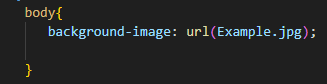
Output
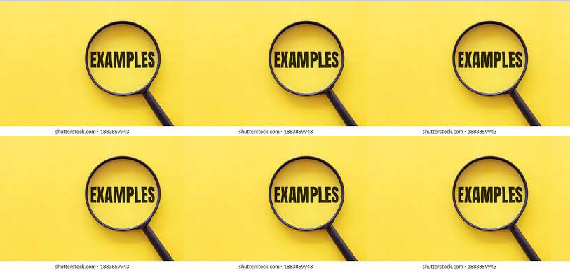
The Background Repeat Property:-
Now you See that Background Image is Repeating as per the height and Width of the container so to fix this problem we have background reperat property.We can repeat our Backround on Repeat-x and Repeat-Y or No repeat and so on. Repeat-X means the background will only repeat on Horizontal direction. Repeat-Y means background will repeat on Vertical direction and No repeat means background will not repeat.
Now background will not repeat
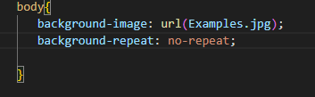
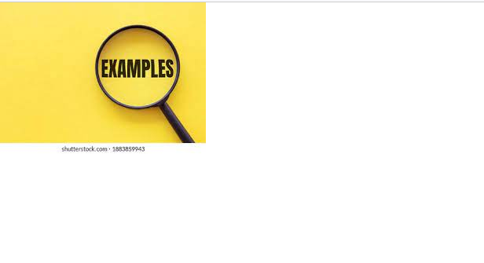
The Background Shorthand
A single property can bee use to set a multiple background propertiesExample
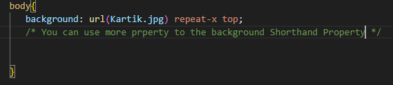MARGIN
In CSS (Cascading Style Sheets), the margin property is used to control the spacing around an element. It defines the space between an element's border and adjacent elements or the outer edges of the containing element.The margin are adjusted from the top to left in the clockwise direction.First TOP second RIGHT third BOTTOM fourth LEFT
Example
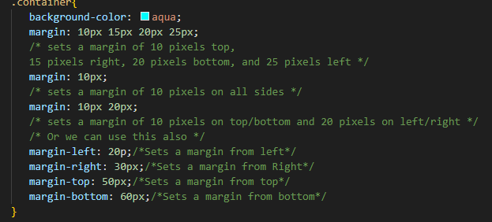PADDING
In CSS, the padding property is used to control the spacing between the content of an element and its border. It defines the space between the element's content and its border, providing internal spacing within the element.The padding are adjusted as same as MARGIN top then RIGHT then BOTTOM then LEFT.
Example
TEXT
In CSS, the text property is not a single property but a collection of properties that are used to control the styling and presentation of text content within an HTML element. These properties include:
COLOR:
The color property use to give the color to your text. For example:
Example
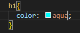
This is used for aligning our texts in a specific direction, left/right/center
Example


It is used to specify uppercase and lowercase letter in a text.
Example
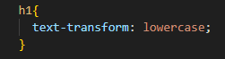
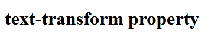
FONT
This property is used to set the font style,fonr variant,font weight,font size and the font family.
Font-Family:
The font family specifies the typeface that will be displayed on screen. this property is used to specify the font is applicatbe for the text.If the font has tw or more letters the it should be incolosed in Quotes
Example
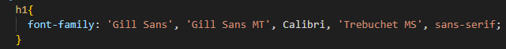
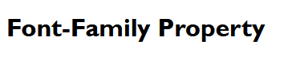
It specifies the font style of an element.
Example
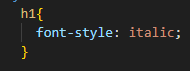
It is used to specify size for text in a document.
Example
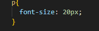
This property defines how thick or thin characters are displayed.
Example
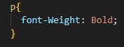
The font variant describes what typeface will be selected by default when displaying text that matches its selector.
Example
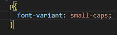